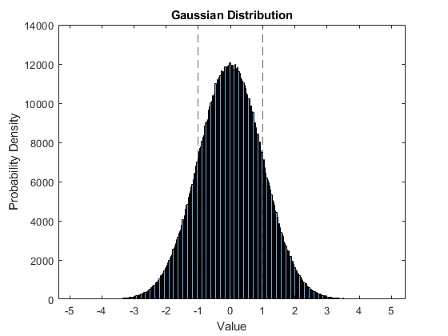
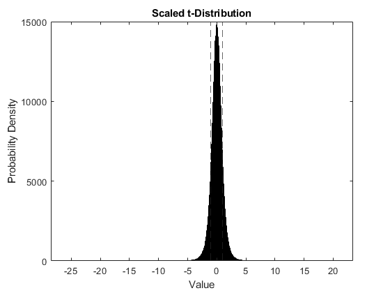
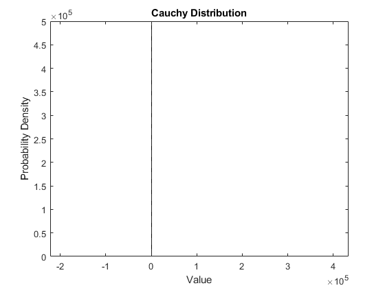
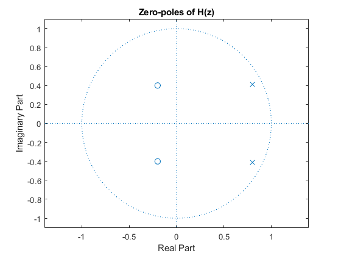
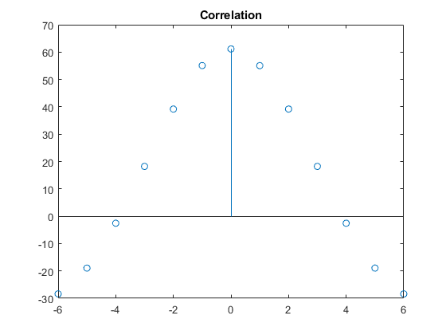
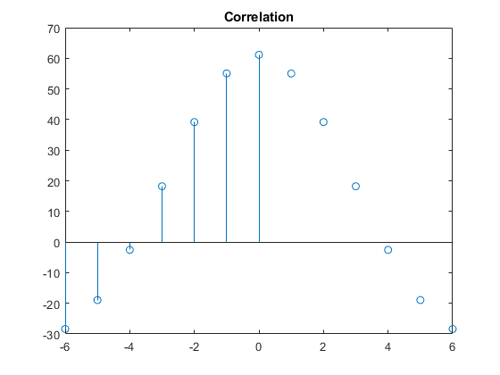
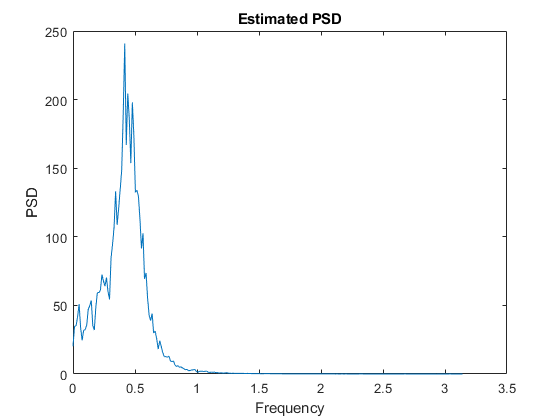
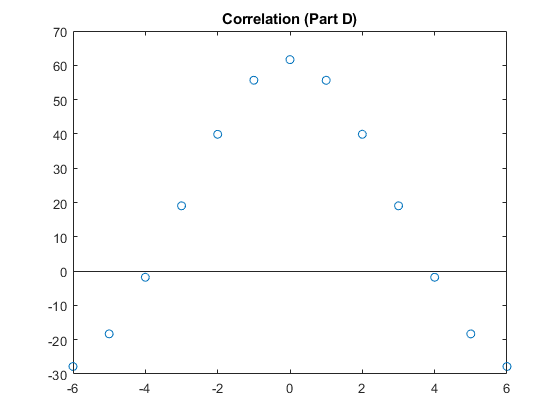
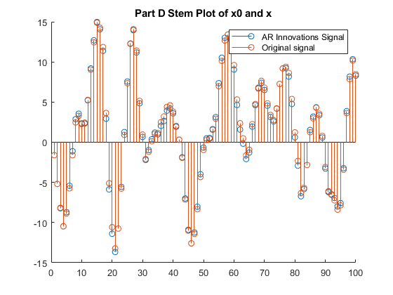

Contents
clc;
clear;
close all;
Question 1 Part A
N = 1e6;
v = 5;
alpha = 0.544;
gaussian = randn(N, 1);
t = trnd(v, N, 1);
k = 1 / sqrt((v / (v - 2)));
t_scaled = t * k;
U = rand(N, 1);
cauchy = alpha * tan(pi * U);
frac_gaussian = sum(abs(gaussian) < 1) / N
frac_t_scaled = sum(abs(t_scaled) < 1) / N
frac_cauchy = sum(abs(cauchy) < 1) / N
figure;
histogram(gaussian);
hold on;
xline(1,'--');
xline(-1, '--');
title('Gaussian Distribution');
xlabel('Value');
ylabel('Probability Density');
figure;
histogram(t_scaled);
hold on;
xline(1, '--');
xline(-1, '--');
title("Scaled t-Distribution");
xlabel('Value');
ylabel('Probability Density');
figure;
histogram(cauchy);
hold on;
xline(1, '--');
xline(-1, '--');
title('Cauchy Distribution');
xlabel('Value');
ylabel('Probability Density');
frac_gaussian =
0.6831
frac_t_scaled =
0.7470
frac_cauchy =
0.6821
  
Question 1 Part B
l = 1e5;
seg_n = N / l;
re_gaussian = reshape(gaussian, [l, seg_n]);
re_t_scaled = reshape(t_scaled, [l, seg_n]);
re_cauchy = reshape(cauchy, [l, seg_n]);
u_gaussian = mean(re_gaussian)
u_t_scaled = mean(re_t_scaled)
u_cauchy = mean(re_cauchy)
u_gaussian =
Columns 1 through 7
0.0006 -0.0023 0.0052 -0.0028 -0.0043 -0.0008 -0.0027
Columns 8 through 10
-0.0015 0.0010 0.0006
u_t_scaled =
Columns 1 through 7
0.0033 -0.0051 -0.0022 -0.0048 -0.0012 0.0060 0.0036
Columns 8 through 10
-0.0019 0.0002 -0.0024
u_cauchy =
Columns 1 through 7
0.3738 0.9644 1.1527 -0.5195 0.6371 0.2833 3.2357
Columns 8 through 10
0.1908 -2.0014 0.0662
Question 2 Part A
num = [1, 0.4, 0.2];
den = [1, -1.6, 0.81];
[z,p,k] = tf2zp(num, den);
figure;
zplane(num, den);
title('Zero-poles of H(z)');

Question 2 Part B
N = 1e4;
v = sqrt(2) * randn(N, 1);
x = filter(num, den, v);
rx = zeros(7,1);
for m = 0:6
rx(m + 1) = dot(x(1:N-m), x(m+1:N)) / (N - m);
end
rx_complete = [flipud(rx(2:end)); rx];
figure;
stem(-6:6, rx_complete);
title('Correlation');
R_toe = toeplitz(rx)
[eigvec, eigval0] = eig(R_toe);
[eigval, idx] = sort(diag(eigval0),'descend');
pos_def = all(eigval(:)>0)
X = toeplitz(x, zeros(1, 7));
R_corr = (X' * X) / N
R_toe =
61.1404 55.0563 39.1752 18.2184 -2.5595 -18.9428 -28.3937
55.0563 61.1404 55.0563 39.1752 18.2184 -2.5595 -18.9428
39.1752 55.0563 61.1404 55.0563 39.1752 18.2184 -2.5595
18.2184 39.1752 55.0563 61.1404 55.0563 39.1752 18.2184
-2.5595 18.2184 39.1752 55.0563 61.1404 55.0563 39.1752
-18.9428 -2.5595 18.2184 39.1752 55.0563 61.1404 55.0563
-28.3937 -18.9428 -2.5595 18.2184 39.1752 55.0563 61.1404
pos_def =
logical
1
Warning: First element of input column does not match first element of input
row.
Column wins diagonal conflict.
R_corr =
61.1404 55.0508 39.1674 18.2130 -2.5585 -18.9334 -28.3766
55.0508 61.1362 55.0447 39.1622 18.2098 -2.5602 -18.9348
39.1674 55.0447 61.1271 55.0370 39.1574 18.2073 -2.5623
18.2130 39.1622 55.0370 61.1206 55.0329 39.1553 18.2055
-2.5585 18.2098 39.1574 55.0329 61.1181 55.0316 39.1542
-18.9334 -2.5602 18.2073 39.1553 55.0316 61.1174 55.0311
-28.3766 -18.9348 -2.5623 18.2055 39.1542 55.0311 61.1170

Question 2 Part C
[s_est, w] = pwelch(x, hamming(512), 256, 512);
figure;
plot(w,s_est);
title("Estimated PSD");
xlabel('Frequency')
ylabel('PSD')
[peak, i] = max(s_est);
w0 = w(i)
pole_angle = abs(angle(p))
w0 =
0.4172
pole_angle =
0.4759
0.4759
 
Question 2 Part D
[a, varv] = aryule(x, 4);
x0 = filter(1, a, v);
rx0 = zeros(7, 1);
for m = 0:6
rx0(m + 1) = dot(x0(1:N-m), x0(m+1:N)) / (N - m);
end
rx0_complete = [flipud(rx0(2:end)); rx0];
figure;
stem(-6:6, rx0_complete);
title('Correlation (Part D)');
figure;
hold on;
stem(1:100, x(1:100));
stem(1:100, x0(1:100));
legend('AR Innovations Signal', 'Original signal');
title('Part D Stem Plot of x0 and x');
 